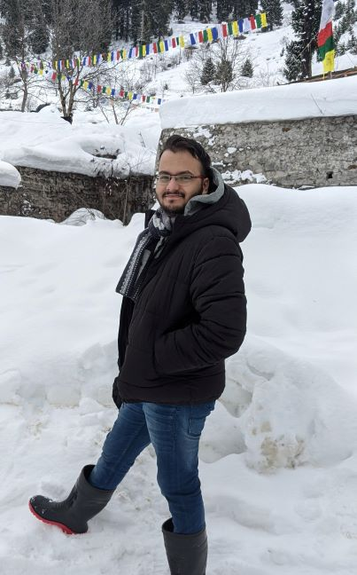
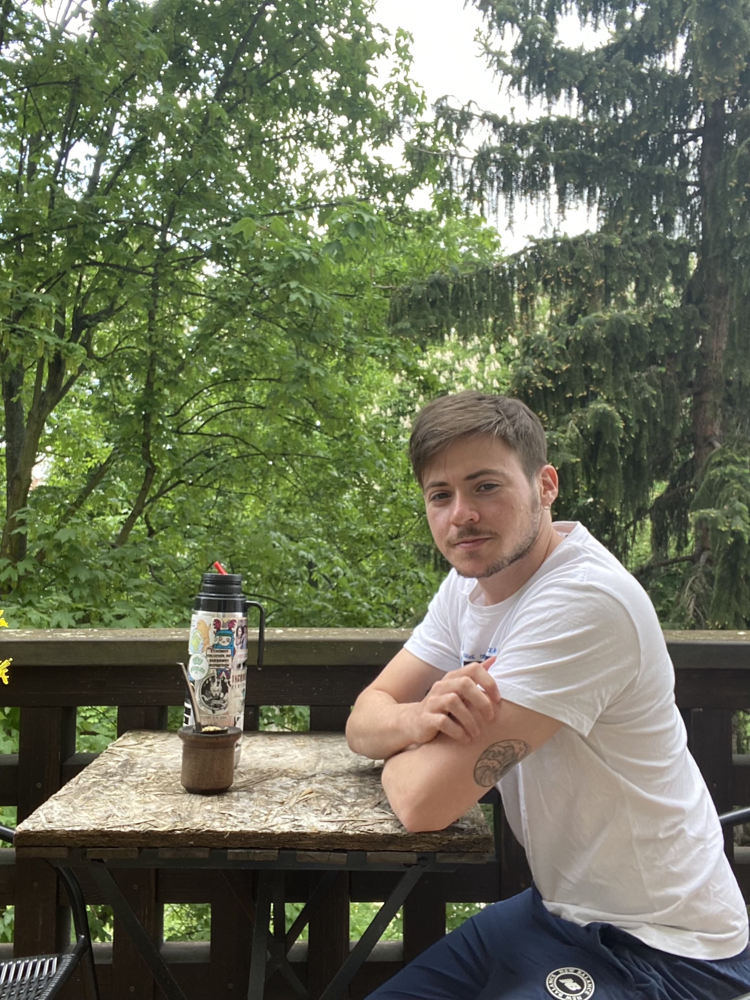

Test Discussion and Student Directory Entry: Respond to the discussion thread and insert media
Discussion Topic: Test Discussion and Student Directory Entry: Respond to the discussion thread and insert media
[BACK TO THE CANVAS FEATURES MODULE]
We'll be using the Discussion tool often in our course. This assignment will give you practice in using this tool.
Discussions are a place where we can share our thoughts, reactions, and questions. They are a great way to get to know other students. If you use almost any form of social media, you'll be familiar with posting and responding.
Here is a full tutorial (Links to an external site.) on how to post a response to a discussion and comment on other people's posts in Canvas. You might want to open it up so you can refer to it when completing this assignment.
We'd like you to test out responding to this discussion in two ways. First, hit reply to start a new discussion post. Your post should include both your written profile and a photo, so you may want to think about them first and get them ready before hitting reply.
1. Write a short introduction for our student directory. Include the following information, and please limit your response to 400 words or less.
- Department of Study: In which academic department will you study at Northwestern? For example, Comparative Literary Studies, Chemistry, Finance, Materials Science and Engineering.
- Country of Origin: Where were you born? Where did you grow up?
- Profile: Tell us something about yourself so that we can get to know you. Some ideas of things to write about: What are your interests in research, and what are your personal interests? What are you looking forward to about living in Evanston or Chicago? What are you excited about as you think about coming to Northwestern? What are you nervous about?
2. Upload a current photo into your post for our student directory: Find a photo of yourself taken in the last year, and use the Images button in the Rich Text Editor menu above to upload the image into your discussion post (the Images button looks like this: ). Feel free to add a caption to give more information about the photo if you would like.
). Feel free to add a caption to give more information about the photo if you would like.
3. OPTIONAL: For students who may want to connect outside the course, you may choose to include personal information that allows others to connect with you, like a WeChat QR code, Instagram handle, etc. Only do this if you feel comfortable sharing this information with everyone in the course. Remember that you also have the option to use the Canvas Inbox to send an email to another student in the course to connect. The Inbox is located in the left menu bar.
Once we have everyone's photo and written introduction, we'll compile them into a PDF student directory, and share them with you in the first week of the TGS-509 course (June 17-25).
If you have any difficulties with the Discussion post assignment, please email Brian Hampson at elp@northwestern.edu, and if possible, share a screenshot of what you see when you have the problem.
Reply from Ziteng Pang
Hi, I'm Ziteng Pang from China and I'll be studying in the Statistics department. I spent a few years in the west coast for my undergrad before coming here. I used to do a little bit of rock climbing and photography until Covid hits when I just ended up staying at home.
Reply from Catalina Farias
Hi everybody!
My name is Catalina Faras and I am from Santiago, Chile. I was born and raised in Santiago and I continue living here. I have a BA in Social Communication and I will be studying in the School of Communication in the Media, Technology and Society (MTS) PhD program. My research interests are digital inclusion and digital inequalities. Specifically Ive been studying how people adopt and use technology, the digital divide that exists between different sectors of society (e.g. gender inequalities, rural and urban areas, educational level, age), and how this influences the development of digital skills. My other research area is digital activism and message effects on digital environments and their influence on civic engagement.
I am really excited to start the program and get to know Evanston, Chicago (I always wanted to visit the city), and the campus!
Reply from Kazuaki Sano
Hello! My name is Kazuaki Sano. I am an incoming Ph.D. student in Managerial Economics and Strategy at Kellogg School of Management. I was born and raised in Tokyo, Japan.
I studied health policy in a Japanese graduate school after I graduated from medical school and worked as a resident physician. I also worked as a primary care physician in a home-care setting and as an occupational health physician while studying in the graduate school. I want to evaluate health policies or understand the behaviors of patients, physicians, and hospitals in terms of economics.
I am looking forward to watching Cubs games because I like watching baseball games and Seiya Suzuki, a Japanese baseball player, began playing in the team this year. In addition, I want to go to the stadiums if Shohei Ohtani, who won the 2021 American League MVP, comes to Chicago.
Reply from Keigo Makino
Hi, I'm Keigo Makino.
I'll study economics in the MECS PhD program at Kellogg School of Management. My research interests include empirical IO, law and economics, political economics, and other topics in empirical microeconomics.
I was born in Japan and I've never been abroad, which makes me nervous about my future life in the US. When I was a high school student, I dreamed of becoming a pianist or conductor. Although I'm not a professional musician, I love playing the piano and analyzing masterpieces of classical music. These days, I'm into works by Ligeti and Xenakis. I'll live in an apartment close to the Evanston campus.
Thank you.

Reply from Hyerim Hong

Hi, I'm Hyerim Hong.
I'm from Seoul, South Korea, where I spent most of my life. I have traveled to the United States and Spain among other places and have pleasant memories of each of them. I hope to make new great memories in Evanston for the next five years.
I will be doing my doctorate in the Department of Spanish and Portuguese, where I would be studying contemporary theater in Spanish-speaking countries, especially Spain. My research interests include immigrant narratives, ethical issues in representation, testimonio, and documentary theater. These interests stemmed from my personal passion for theater and from my concern for contributing to society.
I'm very excited to be joining the Northwestern University community. I have heard great things about the community, such as how kind and cooperative people generally are and the supportive atmosphere it has. I'm also looking forward to living in Evanston and in close distance from Chicago, as I have always wanted to enjoy the suburbs' tranquility as well as the vibrant city life. I would love to see the lake and all the greenery in Evanston. I've never been to Chicago, but I've been told that it has great art, theater, and culture, which I won't miss out.
There is one thing I am worried about living in Evanston: the cold. I can't stand cold weather and I've heard that winter in Illinois is very long and quite extreme. People on the Internet give bits of advice to wear layers and to put on waterproof boots and coats, but honestly, I'm not sure if that would be enough for me to keep myself warm. However, I won't let the cold hold me back from enjoying my time in Evanston. I'm sure I'll figure out my own ways to cope with the cold eventually.
I look forward to making new friends and experiencing new cultures at Northwestern University and in Evanston!
Reply from Jose Lara Sanchez
My name is Jos Luis Lara Snchez and I am a Mexican student that will be enrolling in the Ph.D. in Economics this Fall. I am very excited of having the chance to contribute to NU's community and to collaborate with my peers and professors. I was born in Mxico City and I have lived here all my life. Thus, I am eager of having the chance of sharing Mexico's culture with your community.
Regarding my research interests, I am fascinated by how economics provides us with the chance of elucidating, through data and models, the interactions between economic agents and how it helps us to construct valid counterfactuals that allow the examination of alternative economic realities in order to propose feasible solutions to economic issues. Particularly, my current areas of interest are econometrics, macro-finance and banking. I consider econometrics to be a powerful tool to assess and contrast the implications of economic models. With respect to macro-finance, I am fascinated by the interrelation between asset prices and business cycles, whereas in banking, I am mostly intrigued about banks' impact on the real economy and their role on monetary policy and systemic risk.
Finally, on a personal note I like to listen to music, to read, go to the movies and watch TV series.

Reply from Chi-ya Chou
My name is Chi-Ya Chou. I was born in Taiwan, and I grew up in Taipei City. I'm going to pursue my Ph.D. in the Department of Civil and Environmental Engineering, and I'm in the group called Transportation systems analysis and planning. My research interests include transportation planning and travel behavior. I'm especially interested in topics related to sustainability and urban resilience. I aspire to study people's decision-making behavior toward emerging transportation services and explore strategies for future transportation planning and operations.
In my free time, I like listening to music and watching movies and series. My favorite singer is Taylor Swift, and I also listen to Japanese rock music. I watch all types of films, except for horror movies. In addition, I've been watching Stranger Things recently because Season 4 is now on Netflix! However, it has been a long time since the last time I watched it. I almost forgot what happened in previous seasons, so I'm reviewing Season 1-3 now. I also like cooking, although I'm still practicing how to cook. Painting is my new hobby, and I like to paint landscapes. Furthermore, I love to travel and try cuisine from different countries. My favorite country is Japan, and I have been there six times. I take lots of pictures during my trips, and I'd say photography is one of my hobbies.
I'm looking forward to having a walk/run along Lake Michigan and learning more about the architecture in Chicago. Meeting new people is what I'm most excited about at Northwestern, and it's also what I'm nervous about. Nice to meet you!

Reply from Donghyun Sohn
Hi Everyone. My name is Donghyun Sohn, and my major is computer science. I am specifically interested in a privacy-preserving database that uses database and cryptography techniques. For example, our lab recently conducted research with a Chicago hospital, analyzing patient data without revealing private information by using some cryptographic methods. I am excited to do research like this.
I was born in South Korea, and I grew up in Seoul, which is the capital of South Korea. When I was 12, I visited Canada for a few months, and at that time, many people did not know much about my country. However, over time, I am glad that many people have come to know Korea, as Korean food and music have become widely known.
Except for my research field, I have two big personal interests.
The first one is sports. I love to play sports and watch sports games. I usually play soccer, and recently I started to learn tennis. I hope I can keep playing tennis at Northwestern too. During my break time, I watched sports games, especially soccer and the NBA. When I watched the NBA in Korea, I always dreamed of watching the NBA player in front of my eye. I am excited to go to the United Center and watch some Chicago bulls players.
I am also interested in fashion. I admire some people who dress well. Therefore, I followed some fashion people on Instagram and got inspiration. I prefer to wear clothes neatly with balanced color. I'm a little worried because the winter weather in Chicago is super cold, and it's hard to get dressed, but I'm also looking forward to living in a new city.
I love meeting new people, so I am adding my social media accounts. Feel free to contact me.
Linkedin : https://www.linkedin.com/in/bulelion37
Instagram : @bule_de

Reply from Tapiwanashe Bhibho
Full names: Tapiwanashe Bhibho
Department of Study: Civil and Environmental Engineering
Country of Origin: I come from Zimbabwe. I was born and bread in Chinhoyi, a small town in the Mashonalad West Province in Zimbabwe.
Profile: An engiprenuer, researcher, educator, and sustainable construction materials enthusiast with a progressive knowledge and experience in Civil, Structural and Environmental Engineering. Passionate about using my understanding of Mathematics and Pure Sciences to engineer solutions to real-life problems. Global citizen with the ideas and principles of ethical and servant leadership at heart.
I am looking forward to meeting and interacting with colleagues from around the globe, and to share with them academic and other life experiences.
Reply from Nalin Shani
Hello everyone!
My name is Nalin Shani, and I was born and raised in Delhi, India. I am 21 years old. I completed my bachelor's degree from the Indian Institute of Technology Delhi. I'll be enrolling in the PhD in Operations Management program at the Kellogg School of Management.
As part of my research, I intend to create data-driven algorithms to assist in analysing and designing service systems. In addition, I plan to investigate how machine learning approaches might enhance the study of complex stochastic systems. I was also offered a position as a Data Scientist in an IT firm in India (on-campus placement) due to my proficiency in Data Science.
I enjoy playing cricket and am a decent spin bowler. I also like to watch anime. I will have a new experience this winter when I move to Evanston, one that I am looking forward to because it will involve living in the snow and experiencing the cold weather.
You can connect with me on Instagram. My Instagram handle is _nixon_z.

Reply from Muhammed Nur Talha Kilic
Im Muhammed Nur Talha Kilic and Im from Istanbul / Turkey. Nowadays, I am about to finish my masters degree in Electronics Engineering in Istanbul Technical University (ITU) and working as an Embedded Software Engineer on satellite technologies in a private company. As of Fall 2022, I will start my PhD in Computer Science on Artificial Intelligence and Machine Learning. I am highly enthusiastic about computer vision projects enhancing by AI technologies. In Northwestern, I really want to increase the collaboration and be part of groups working on these projects. I was born in Konya, which is located in the center of Turkey and it is famous with Rumi, known as one of the best-selling poets in the US. I find myself introverted and, I think it will be challenging and great experience for me to make friendships with people from all over the world. I am a big fan of violin concertos. In Northwestern, I plan to enroll in the violin course if I get the opportunity. Since the climate of Chicago is similar to that of Istanbul, those who like cold weather like me will definitely love the city.
I love meeting new people and staying in touch, so I am adding my social media accounts. Please do not hesitate to contact me.
Linkedin : https://www.linkedin.com/in/mntalhakilic/ (Links to an external site.)
Instagram : @mntalha_kilic

Reply from Luis Gustavo De Azevedo Gomes
I was admitted to the Managerial Economics and Strategy Ph.D. program at the Kellogg School of Management.
I was born in Brazil, and I lived here all my life, but for a brief single-term study abroad program at Rice University in Houston. My family lives in a small city in the state of So Paulo, and that is where I lived until I went to college in the city of So Paulo. I graduated in Economics from the University of So Paulo and soon after I joined FGV's So Paulo School of Economics to pursue my Master's degree.
During these years, I became interested in applied economic theory, especially in the applications to political economy. In other words, I am interested in applying Economics' theoretical framework to study political situations. In this theme, one topic that captivates me is the study of conflicts, as studying military history has been one of my hobbies.
I became interested in applied economic theory, especially in the applications to political economy. In other words, I am interested in applying Economics' theoretical framework to study political situations. In this theme, one topic that captivates me is the study of conflicts, as studying military history has been one of my hobbies.
Academical interests aside, I am also into cooking and manual crafts such as calligraphy and, more recently, bookbinding.
What I most look forward to once I move to Evanston is coming back to an in-person academic environment. The conversations and free exchange of ideas face to face is the part I miss the most from the pre-pandemic period.
Right now my only source of anxiety has been finding a roommate and renting a place to live.
Reply from Shima Shahabfar
I'm Shima, and I was born and raised in Tehran, Iran.
I will be joining the Materials Science and Engineering department at Northwestern University to continue my research and dive deeper into the vast field of materials design.
I studied chemistry for my undergraduate studies. Chemistry might not be my graduate field of study, but it helped me gain chemical bonding insights that I now use for designing materials.
I'm not particularly eager to spend my time in laboratories; however, I enjoy using computers to simulate materials' characteristics and behavior.
I enjoy clearing my mind over weekends by using fresh air while hiking and spending time with my friends.
I am excited about starting a whole new life at Northwestern as a scholar, and I am looking forward to finding new friends. I am also enthusiastic about starting my independent research and collaborative projects with NU's numerous resources.
Ironically, I spend so many hours on my laptop, yet I do not have any social media account other than my Twitter account. Here's my ID: @Shima__Sh.
Looking forward to meeting you all!

Reply from Lisandro Andres Mendieta
Hi there! Im Andrs from Argentina -born and raised- (and yes, Im a big fan of Leo Messi). Ill be an incoming PhD student in Spanish & Portuguese next semester. In my free time, I enjoy going out to dinner, grabbing mate (our traditional drink) and going to the movies. In 2019-2020 I had the opportunity to study for two quarters at Northwestern so Im familiarize with my Department: I already have friends there and I've met the faculty. Also I want to say that Im in love with Chicago which is one of the most beautiful cities in the entire world.
Hope to see you'll soon! :)

Reply from Marie Fatima Gaw
Hi everyone, I'm Fatima Gaw. I'm an incoming PhD student of the Media, Technology and Society (MTS) program.
I am from the Philippines, but I have moved to Australia for two years for my master's degree. I got back in 2020 (pandemic year!) to teach and do research.
I have been in the academe professionally for 2.5 years years now, working as an Assistant Professor at the University of the Philippines. My research interests center on the mediation of platforms, networks and algorithms in political, culture and discourse. My recent works have been around election discourses and disinformation (see my latest analysis (Links to an external site.)), from the election of populist leader Rodrigo Duterte in 2016 to the election of the son of the dictator Bongbong Marcos Jr. to office just last May.
I'm looking forward to living in Chicago because I heard it hits the sweet spot between a busy city and a laid back culture. I truly need some slower pace in my life. Northwestern is also the best place for me to do my research as it is has one of the best Comm and media departments in the world. The labs are so cool on paper, they might be much more amazing IRL!
The only thing I'm nervous about is bringing my dog with me from Manila to Chicago. There's too many papers to process (more than my own visa!) so I'm hoping for the best results for me and him.
Cheers, hope to see you all soon. Follow me to Twitter @fatimagaw!